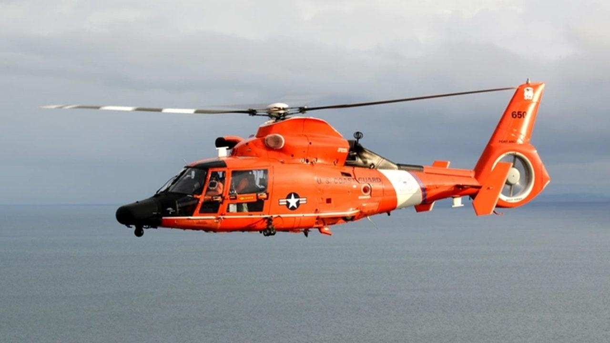

Coast Guard rescues 12 after cargo ship runs aground near Virgin IslandsThe U.S. Coast Guard said it rescued 12 people who abandoned a large cargo ship that ran aground near the U.S. Virgin Islands early Wednesday. The agency is investigating whether the incident caused any contamination, noting that the vessel was carrying some 13,000 gallons of fuel and 250 gallons of lube oil. The ship, named Bonnie G, also was transporting six cars, a truck, a trailer and two pallets of cargo. "There is still much work ahead of us," said Capt. José Díaz, commander of the Coast Guard Sector San Juan. Those aboard the 195-foot ship radioed for help after the engine room began taking on water before dawn. They abandoned ship using a lifeboat and two life rafts, the Coast Guard said. The incident occurred near St. Thomas as Tropical Storm Philippe dropped heavy rain and churned waters in the region. |
 |